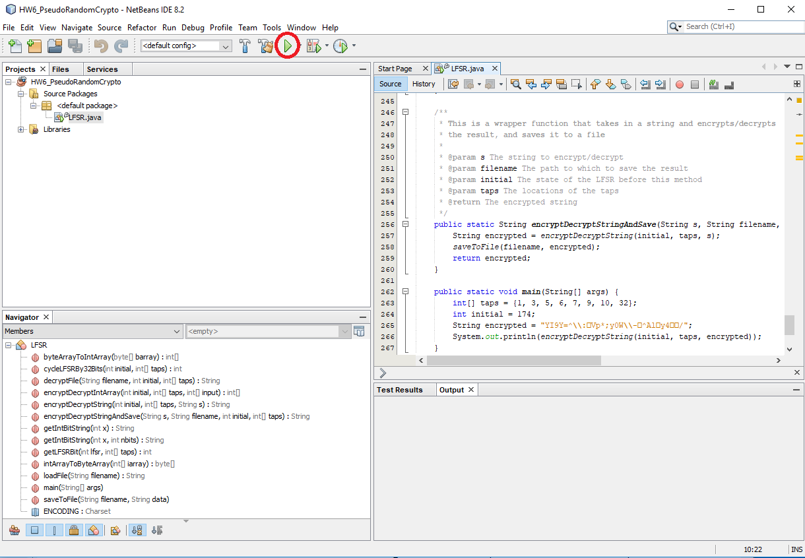

Assignment 0: Warmup (25 Points)
The purpose of this assignment is to get us setup for the course by getting to know each other better, by setting up the software and communications environments, and by reviewing the course syllabus.
- Personal Survey (5 pts)
- Scheduling 20 Minute 1 on 1 Meeting (5 pts)
- Doodle Office Hours
- Software Environment (5 pts)
- VPN / Backend Modules Testing (2 pts)
- Syllabus Quiz (8 pts)
Personal Survey (5 Pts)
We are fortunate to have a small number of students per class at Ursinus, and I want to get to know every student as well as I can. Please fill out this qualtrics survey. For those of you who had me before, I apologize that this is a bit longer than usual, but I also want to make sure we have our bases covered with remote learning.
Scheduling 20 Minute 1 on 1 Meeting (5 pts)
We sadly will not have the opportunity to meet in person, but I still want to get to know everyone and to have an opportunity to discuss the class with students real time face to face. Therefore, each student will schedule a 20 minute block of time to meet with me virtually over Microsoft Teams during the first week of class, sometime between 7AM and 1PM (if this time range doesn't work, we can arrange another time). To schedule the meeting, follow thee steps below (you can also view this guide that Library & IT put together). Once you have made a selection, please be sure to be logged onto Microsoft Teams at least 5 minutes before your selected time. I will then initiate a personal call from my end.
Directions for Scheduling
- Open up canvas, and click "Calendar" on the left navigation pane
- On the right, under
Appointments, clickFind Appointment, and selectOO Programming - Navigate to the week of 9/7, and reserve a 20 minute block that works for you
Doodle Office Hours (Optional)
It is my goal to have at least 5 hours of virtual office hours per week over Microsoft Teams. This worked well last spring for those who took advantage of it, especially because we were able to record little snippets and to save code for everyone to review later. If you would like to ensure that you can make these office hours, please fill out the Doodle poll at this link. Please check off all of the hour intervals for which you attend at least 30 minutes (ignore the absolute dates; it's just the time of day / day of the week that matter).
Software Environment (5 pts)
Please follow the directions on the software page to install Netbeans on your computer. Once you have Netbeans installed, click here to download some code that we will use to test it. Save it somewhere on your computer that you know where to find it (the easiest way to do this in most browsers is to right click on the link and select "save as"). It is recommended that you make a folder that you use to place all of your CS 174 work in one place. As an example, I will create such a folder on my desktop named CS174, and I will copy the file I just downloaded into it. Next, you will want to extract the contents of the file you just downloaded into the folder. For example, on Windows, I would right click on HW0-master.zip and click extract, and put the following into this dialog that pops up:
Note that the default option is to extract to CS174/HW0_NetbeansCheck-master, but if you do this, it will create a folder within a folder (not the end of the world, but it makes things a little messy).
Next, open Netbeans and go to File->Open Project and navigate to the folder you just extracted. Then, open the project HW0_NetbeansCheck-master
Next, expand Source Packages -> hw0 and double click on LFSR.java to open the test code (some of you may recognize this from CS 173). Once you've done this, right click on the file LFSR.java, and click "Run File" (you can also click the play button circled in red in the image below)

The code will then run, and it will print out a special message inside of a terminal at the botton of the Netbeans window. Please send this text to me as a message on Microsoft Teams (5 pts). This will confirm both that your software environment is ready to go and that you are able to use Teams to send me direct messages. If you are having any trouble, please let me know.
VPN / Backend Modules Testing (2 pts)
Students will be completing online, interactive pre-class modules to learn topics before class. Part of these modules will involve completing small code exercises live in the browser to check comprehension. In order to get credit for completing these exercises correctly, students must either be on campus, or they must be connected to the Ursinus VPN. If you are off campus, please follow the directions at this link to setup the multi-factor authentication on your Ursinus account, followed by VPN on your machine (If you have an operating system other than Mac or Windows, please contact me and I can help you). Once you are either on campus or connected to the VPN, click here to visit a link that will check your connection for you. If everything is working, you will receive an e-mail, and you will automatically receive 2 points on canvas.
Syllabus Quiz (8 pts)
Please take a moment to familiarize yourself with the course syllabus. Then, complete the 8 questions on the Assignment 0 Syllabus Quiz on Canvas. You will have as many attempts as needed. Please feel free to ask questions to me or to the class on GroupMe if anything in the syllabus is unclear.